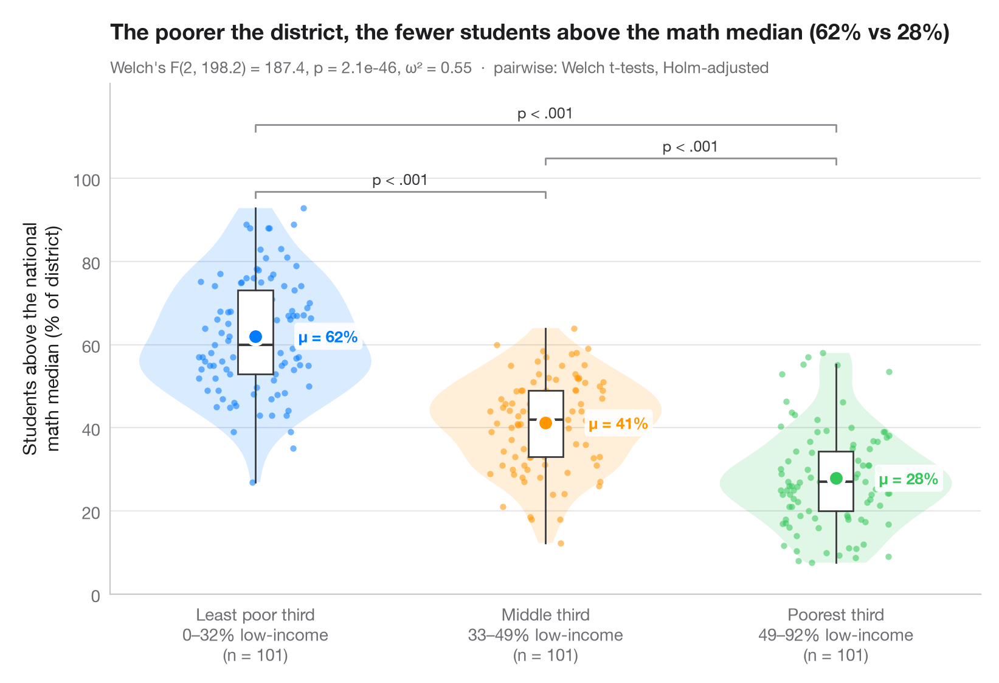

群間比較
バイオリン＋箱ひげ＋データ点に、ウェルチの分散分析、効果量、多重比較を添えます。

ggbetweenstats() の Python 版です。すべての観測値を表示し、バイオリン（分布）と細い箱ひげ（四分位数）で包み、群平均を強調しています。サブタイトルには、不等分散に頑健なウェルチの一元配置分散分析と効果量 ω² を示し、括弧はホルム法で補正したウェルチの t 検定による対比較の結果を表しています。
データは statsmodels に同梱されている、1998年の STAR テストにおけるカリフォルニア州の303学区です（sm.datasets.star98）。アウトカムは数学で全国中央値を上回った生徒の割合 NABOVE / (NABOVE + NBELOW) で、群は学区内の低所得家庭の生徒の割合（LOWINC）の三分位で、pandas.qcut によって101学区ずつの3群に分けています。
コードおよび図中のテキストは英語です。
from itertools import combinations
import matplotlib.pyplot as plt
import numpy as np
import pandas as pd
import statsmodels.api as sm
from scipy import stats
from statsmodels.stats.multitest import multipletests
from statsmodels.stats.oneway import anova_oneway
# Data: % of students above the national math median, by district low-income tercile
df = sm.datasets.star98.load_pandas().data
df["above"] = 100 * df.NABOVE / (df.NABOVE + df.NBELOW)
groups = ["Least poor third", "Middle third", "Poorest third"]
df["poverty"] = pd.qcut(df.LOWINC, 3, labels=groups)
data = [df.loc[df.poverty == g, "above"].to_numpy() for g in groups]
palette = ["#007AFF", "#FF9500", "#34C759"]
# Welch's ANOVA + omega squared
res = anova_oneway(data, use_var="unequal")
k, n = len(data), sum(len(d) for d in data)
omega2 = (res.statistic - 1) * (k - 1) / ((res.statistic - 1) * (k - 1) + n)
# Pairwise Welch t-tests, Holm-corrected
pairs = list(combinations(range(k), 2))
raw_p = [stats.ttest_ind(data[i], data[j], equal_var=False).pvalue for i, j in pairs]
adj_p = multipletests(raw_p, method="holm")[1]
fig, ax = plt.subplots(figsize=(8, 5.4))
rng = np.random.default_rng(1)
for i, (d, c) in enumerate(zip(data, palette)):
v = ax.violinplot(d, positions=[i], widths=0.8, showextrema=False)
for body in v["bodies"]:
body.set(facecolor=c, alpha=0.15, edgecolor="none")
ax.boxplot(d, positions=[i], widths=0.12, showfliers=False, patch_artist=True,
boxprops=dict(facecolor="white", edgecolor="#3A3A3C", lw=1),
medianprops=dict(color="#3A3A3C", lw=1.5),
whiskerprops=dict(color="#3A3A3C"), capprops=dict(visible=False))
ax.scatter(i + rng.uniform(-0.22, 0.22, len(d)) * 0.9, d, s=14, color=c, alpha=0.55, lw=0)
ax.scatter(i, d.mean(), s=90, color=c, edgecolor="white", lw=2, zorder=5)
ax.annotate(f"μ = {d.mean():.0f}%", (i + 0.09, d.mean()), xytext=(10, 0), textcoords="offset points",
va="center", bbox=dict(boxstyle="round,pad=0.25", fc="white", ec="none", alpha=0.9), fontsize=9.5, fontweight="semibold", color=c)
# Significance brackets
top, step = max(map(np.max, data)), 8
for h, ((i, j), p) in enumerate(sorted(zip(pairs, adj_p), key=lambda t: t[0][1] - t[0][0])):
y = top + 4 + h * step
ax.plot([i, i, j, j], [y - 1.5, y, y, y - 1.5], color="#8E8E93", lw=1)
label = "p < .001" if p < 0.001 else f"p = {p:.3f}"
ax.text((i + j) / 2, y + 0.8, label, ha="center", va="bottom", fontsize=9, color="#3A3A3C")
lowinc = df.groupby("poverty", observed=True).LOWINC.agg(["min", "max"])
ax.set_xticks(range(k), [f"{g}\n{lowinc.loc[g, 'min']:.0f}–{lowinc.loc[g, 'max']:.0f}% low-income"
f"\n(n = {len(d)})" for g, d in zip(groups, data)])
ax.set_ylabel("Students above the national\nmath median (% of district)")
ax.set_ylim(top=top + 4 + len(pairs) * step + 2)
ax.set_yticks(range(0, 101, 20))
ax.set_title(f"The poorer the district, the fewer students above the math median "
f"({data[0].mean():.0f}% vs {data[-1].mean():.0f}%)", pad=26)
ax.text(0, 1.02, f"Welch's F({res.df_num:.0f}, {res.df_denom:.1f}) = {res.statistic:.1f}, "
f"p = {res.pvalue:.1e}, ω² = {omega2:.2f} · pairwise: Welch t-tests, Holm-adjusted",
transform=ax.transAxes, fontsize=9.5, color="#6E6E73")
plt.show()
図にはオプションの PyStatlas スタイル を使用しています。同じ見た目にするには plt.style.use("pystatlas.mplstyle") を追加してください。
データの出典
- California STAR test results, 1998 (303 school districts). Gill, J. (2001). Generalized Linear Models: A Unified Approach (Quantitative Applications in the Social Sciences, No. 134). Sage. https://www.statsmodels.org/stable/datasets/generated/star98.html
Original data from the California Department of Education's Standardized Testing and Reporting (STAR) program, 1998. Subset distributed with statsmodels (sm.datasets.star98) with the author's permission.
これらの例は統計手法を説明するためのものです。図のタイトルは、この特定のデータ（多くは小規模で、古く、部分的な標本）で図が示す内容を述べたものであり、実質的な問いに対する著者の立場ではありません。解釈、背景、データの質については、ここに挙げた元の出典を参照してください。
引用方法
PyStatlas は Thierry Warin が作成・運営しています。研究や業務に役立った場合は、ぜひ引用してください。
Warin, T. (2026). Between-groups comparison. In PyStatlas: A Python Gallery of Statistical Graphics for the Social Sciences. https://warint.github.io/pystatlas/group-comparisons/between-groups-violin/
@misc{warin2026statlas,
author = {Warin, Thierry},
title = {PyStatlas: A Python Gallery of Statistical Graphics for the Social Sciences},
year = {2026},
howpublished = {\url{https://warint.github.io/pystatlas/}},
note = {Source code: https://github.com/warint/pystatlas}
}